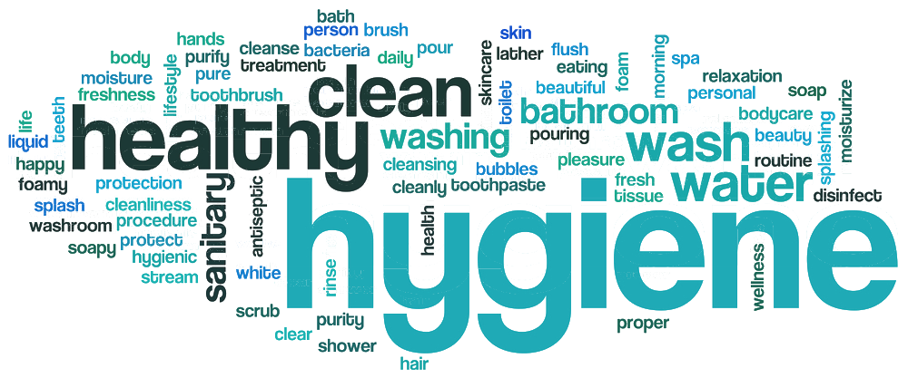
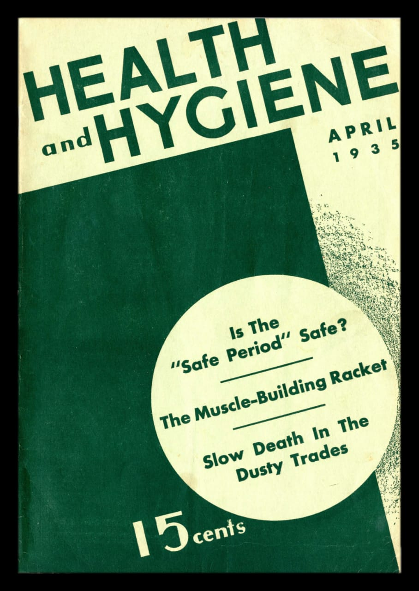
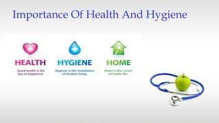
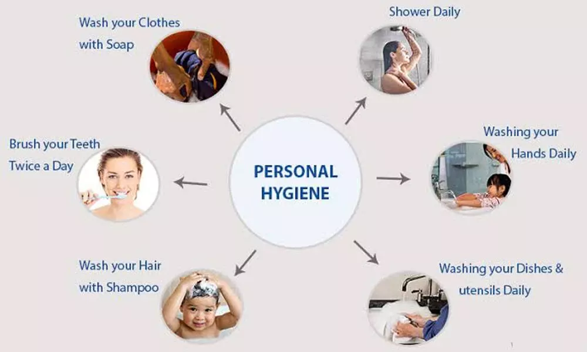
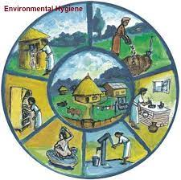
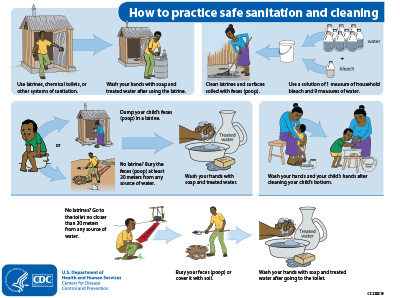
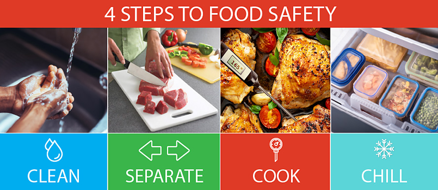
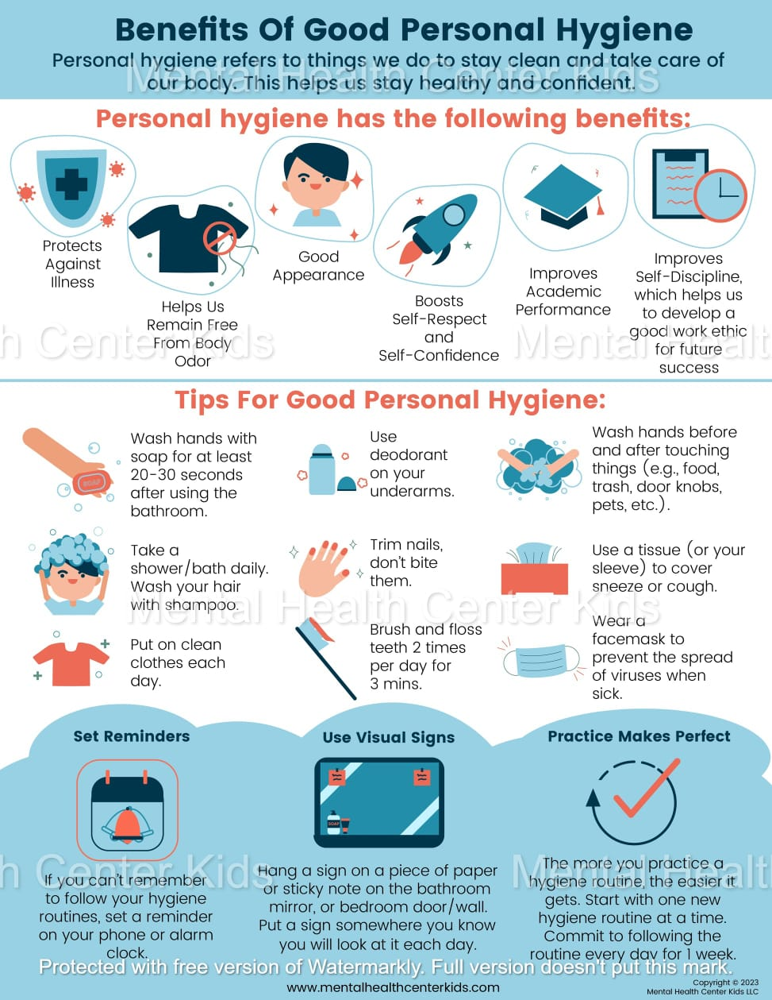
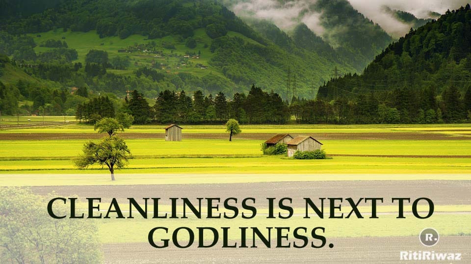
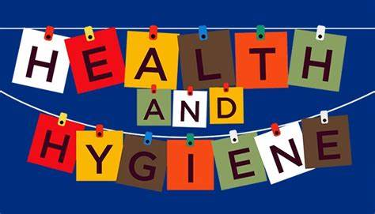

Health education plays an important role in the community hygiene.To prevent illness and have positive health attitude,correct and complete knowledge of health is necessary.Health is cleanliness and cleanliness is one of the main derenes aganist diseases,wheather contagious or seif-generated.Good personal hygiene is one of the best way to protect yourself from getting gastro or infectious diseases such as COVID-19,cold and flue.Washing your hands with soap removes germs that can make you ill.Mainting good personal hygiene will also help prevent you from spreading diseases to other people.
The history of hygiene dates back to Greek mythology.Its very name is derived from hygieia,the goddes of health and the daughter of Asklepios,the god of medicine.One of her best-known devotees was Hippocrates,a physican who recommended coscientious personal hygiene as a means of avoding disease.
According to the world Health Organization,health is astate of complete physical,mental,and social well-being and not merely the absence of disease or infirmity.Personal hygiene can make the difference between being healthy and disease-free and not well.
They are four types of hygiene they are
Good personal hygiene is one of the best ways to protect yourself from getting gastro or infectious diseases such as COVID-19, colds and flu. Washing your hands with soap removes germs that can make you ill. Maintaining good personal hygiene will also help prevent you from spreading diseases to other people.
Thorough environmental hygiene is important for the prevention of transmission of infectious diseases within healthcare settings. Environmental hygiene encompasses effective cleaning of surfaces using appropriate products, decontamination of medical equipment and devices used in patient-care procedures, safe and appropriate handling of sharps, blood and body fluid spills, waste and linen.
Domestic hygiene practices include all the work done to keep people's clothes, beddings, and houses clean. These activities include washing clothes and beddings, cleaning the toilet, sweeping and cleaning floors, and washing dishes after meals.
Food hygiene is a set of food manufacturing practices that aim to minimize biological food hazards through safe and clean operations to protect public health from foodborne diseases. Food safety is a management system that is applied by a food business to ensure that hazards are controlled to acceptable levels. Food safety is concerned with all types of hazards and includes the system of corrective actions, monitoring, and how to achieve safe operations.
1.Reduce risk of Disease development.
2.Reduce risk of oral Health complication.
3.Good hygiene prevents the spread of germs.
4.Reduce the chance of infection and illness.
5.It increase your self-esteem.
conduct community meeting and gathering to discuss the significance of health and hygiene practice.utilize visual aids,presentations,and interactive sessions and myths related to health and hygiene.Share success stories and case studies to inspire behavior change.organize worshops focusing on personal hygiene practices such as handwashing,oral hygiene,and bathing.Demonstrate proper techniques and providing guidance on the use of soaps, toothbrushes,and other hygiene products.
1.Clean your hands.Protect your health.
2.Health is wealth.
3.Be healthy be happy.
4.stay healthy,live long.
email:health@gmail.com
Good personal hygiene is one of the best way to protect oneself from getting illness.maintaining good personal hygiene will also help prevent you from spreading diseases to other people.Good hygiene lowers a person's risk for diseases and illnesses commonly spread through virus and bacteria. we conduct awarness program on health and hygiene in our village and we tell about the benifits of hygiene.we give proper information on health and hygiene.
